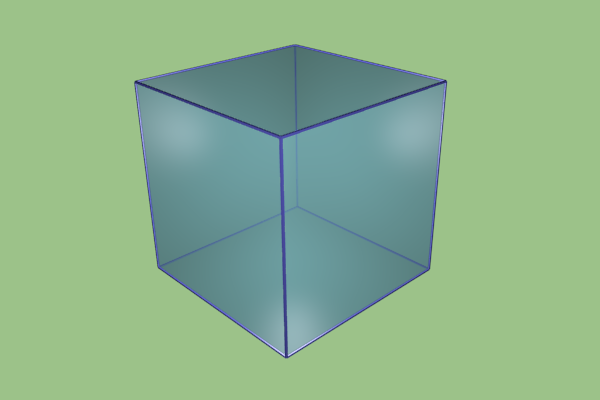

Прозрачный куб с непрозрачными гранями (Blender 2.6x)
Создание ребер
- Вид сверху (7). Shift+D (дублирование). Смещаем копию на равное количество единиц (Ctrl) вправо.
- N. В разделе Scale устанавливаем значения X и Z в 0.01. Получается объемное ребро. N.
- Дублируем ребро и смещаем его ровно на то количество единиц, которое равно стороне куба.
- Выделяем оба ребра, дублируем, поворачиваем по оси Z на 900 (R, Z, Ctrl).
- Выделяем четыре ребра. Вид спереди (1). Перемещаем вниз (на уровень основания исходного куба). Дублируем, перемещаем вверх. (Всегда использовать Ctrl.)
- Выделить два видимых из вида спереди ребра. Дублировать, повернуть по Y на 900 (R, Y, Ctrl).
- Не снимая выделения, перейти на вид сбоку. Дублировать и переместить на противоположную грань.
- Выделить все грани (B) и объединить (Ctrl+J).
Настройки материалов
- Для ребер лучше добавить материал с более темным оттенком.
- Для куба включиь опцию Transparency (прозрачность), уменьшить значение Alpha до 0.5-0.7.
Совместите каркас из ребер с кубом, объединить их.
Настройка окружения
- На панели Rander на вкладке Shading отключите опции Shadows и Ray Tracing.
- На панели World можно поменять цвет горизонта.
- Внутрь куба установить лампу. Исходную лампу поместить между кубом и камерой.
